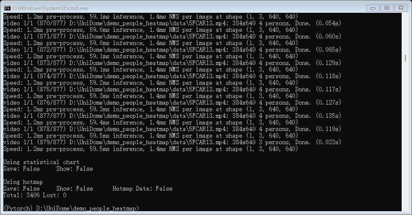
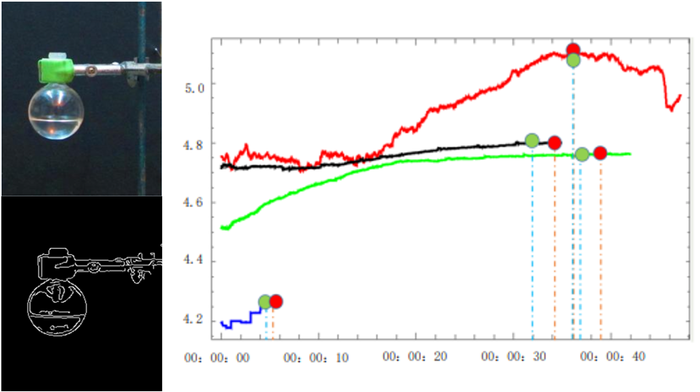
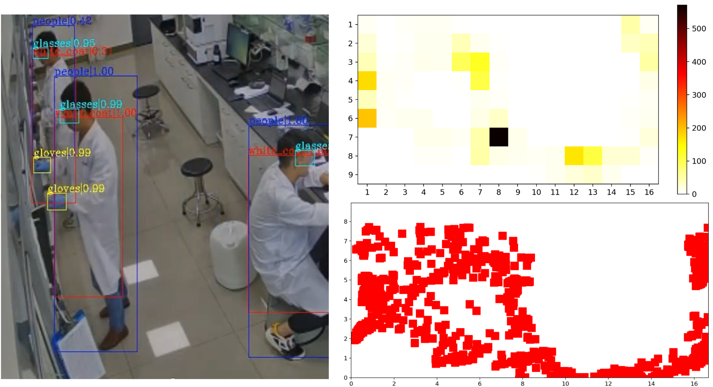

This project focuses on the development of a large-scale and systematic laboratory monitoring system, built upon a suite of advanced computer vision algorithms. The system integrates personnel safety behavior detection, multi-scenario safety monitoring, chemical experiment status tracking, as well as front-end interface design and back-end live streaming functionality.
Figure 1: Chemical experiment status tracking. The green dot is the actual end time of the experiment, and the red dot is the end time of the experiment detected by the algorithm

Figure 2: Personnel locating and wear detection

As a core contributor to this project, my primary responsibilities include the development of visual detection and tracking algorithms, alongside the optimization, acceleration, and deployment of deep neural networks. Additionally, I developed a robust back-end system for real-time live streaming.
By leveraging TensorRT to accelerate certain operators within the deep neural networks, the system ultimately achieved real-time processing of 12 video streams on a single NVIDIA T4 GPU.